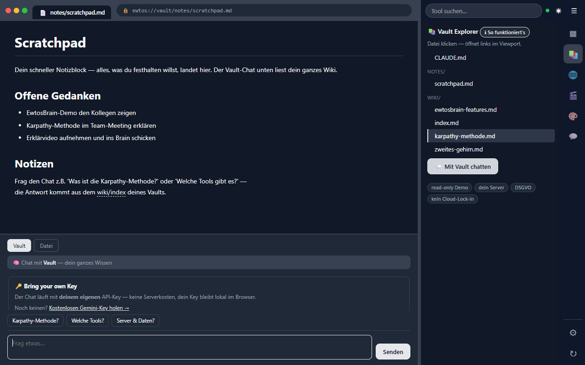

Web-Entwickler aus der Agenturpraxis, spezialisiert auf WordPress, n8n-Automationen und KI-Lösungen. Ich löse konkrete Probleme — und baue dafür, was noch nicht existiert.
Kein Paket-Katalog — ich baue, was dein Problem löst. Web, Automation und KI greifen dabei ineinander.
Websites und Plugins, gebaut für echte Redaktionsarbeit statt Klick-Wüste. Schnell, wartbar, auf deinen Betrieb zugeschnitten.
Wiederkehrende Handgriffe verschwinden in Workflows, die im Hintergrund laufen. Weniger Handarbeit, nichts fällt mehr durchs Raster.
Assistenten und Chats, die auf deinem Wissen arbeiten — nicht auf fremdem. Dein Key, deine Daten, wenn nötig komplett lokal.
Wenn es das passende Werkzeug nicht gibt, baue ich es. Bestes Beispiel: Ewtos Office-Brain — mein erstes Produkt.
Eine Chrome-Extension mit selbst betriebenem Server: chatte direkt im Browser mit deinem eigenen Wissen, erfasse Web-Inhalte und erledige Alltags-Tools an einem Ort.

Eine Person mit einem System — und das ist Absicht.
Ich bin Dario, Web-Entwickler in einer Werbeagentur — und Autodidakt aus Überzeugung. Ich habe mir das Bauen selbst beigebracht, weil ich Probleme lieber löse als beschreibe.
Web, Marketing und KI greifen bei mir ineinander: Die meisten Webdesigner können kein Marketing, die meisten Marketer bauen nicht selbst. Ich mache beides — und baue daraus Systeme, die zusammenarbeiten.
Unter meiner Marke ewtos entwickle ich, was in der täglichen Arbeit fehlt: von WordPress-Plugins über n8n-Automationen bis zu KI-Werkzeugen wie Office-Brain.
Konkretes Problem, Idee oder einfach eine Frage — schreib mir direkt.